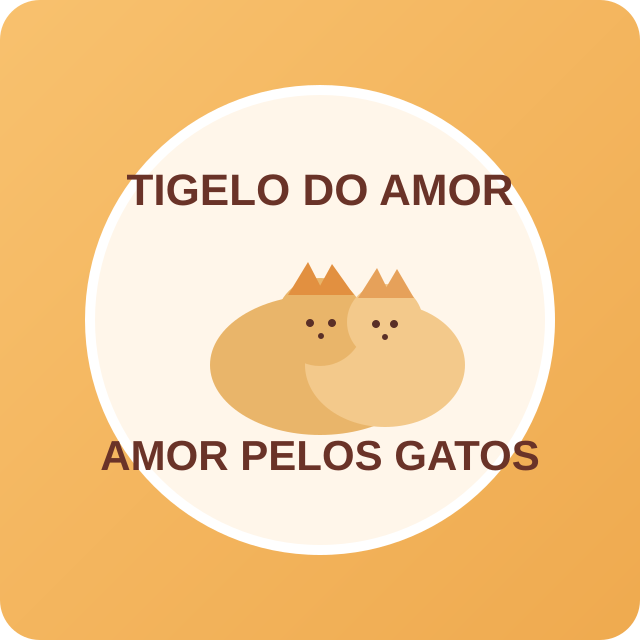

Se quiser, substitua o arquivo assets/logo-tigelo.svg pela logo oficial em melhor resolução.
Quem somos
O Projeto Tigela do Amor nasceu do desejo de ajudar gatos em situação de rua. Cansamos de ver tantos animais sofrendo, passando fome e sem cuidados. Por isso, criamos uma rede de ajuda movida pela solidariedade de pessoas que acreditam nessa causa.
Realizamos alimentação diária, ações semanais nas ruas, monitoramento de saúde e resgates. Cada gatinho resgatado para adoção recebe os cuidados necessários para encontrar um lar responsável.
Nosso impacto hoje
Para onde vai sua ajuda
- Alimentação diária de gatos em situação de rua
- Acompanhamento e cuidados veterinários
- Resgates emergenciais
- Vermifugação, testes e castração
- Formalização do projeto como associação
Por que doar agora
Manter esse trabalho exige recursos contínuos. Cada contribuição, de qualquer valor, ajuda a garantir comida, tratamento e novas oportunidades de vida para esses gatos.
Sua doação fortalece uma corrente de amor que já transforma vidas todos os dias.
Pix para doação
Chave Pix (e-mail):
tigeladoamor2022@gmail.com
Junte-se a nós e faça parte dessa corrente de amor pelos animais.